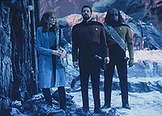
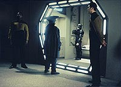
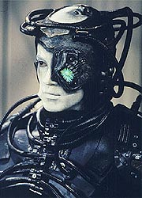
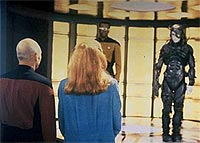

|
MANCHETE
DO EPISDIO
Episdio
d nova face aos Borgs,
a partir de uma perspectiva individual
Episdio
anterior | Prximo
episdio
Sinopse:
Data Estelar: 45854.2.
Picard envia um grupo avanado para investigar os destroos de uma
pequena nave acidentada em uma lua. Eles encontram apenas um
sobrevivente --um Borg adolescente. O capito inicialmente no
demonstra sinais de querer ajudar, mas Beverly acaba convencendo-o a
transportar o ser a bordo, apesar do risco de sua estada acabar
alertando outros Borgs da presena da Enterprise.
 De
volta a bordo, Beverly disconecta o centro de comando que permite ao
Borg se comunicar com o resto da Coletividade. Troi sente raiva em
Picard, que foi sequestrado pelos Borgs quase dois anos antes, mas
ele se recusa a discutir seus sentimentos. Entretanto, eles acabam
ficando transparentes quando Beverly descobre que os implantes
cerebrais de seu paciente esto danificados e pede a Picard
autorizao para que Geordi construa outros. Picard percebe que se
Geordi conseguir mexer com a estrutura de comando do crebro desse
Borg, ele pode destruir a raa inteira --que est interconectada
em rede.
Beverly fica chocada ao saber que Picard pretende usar a criatura
que ela est tentando curar com fins blicos. Entretanto, o resto
da tripulao concorda com o capito, citando a histria de
guerra dos Borgs contra a Federao. Mais tarde, o Borg acorda
confuso e desorientado, aps ser desconectado da mente coletiva.
No laboratrio de cincias, Geordi e uma relutante Beverly tentam
se comunicar com o Borg para que o engenheiro possa aprender mais
sobre as rotinas de comando em seu crebro. Conforme eles
conversam, descobrem que este Borg inofensivo e inocente
--diferente dos outros Borgs que eles haviam encontrado. Eles do a
ele o nome de Hugh, e Geordi comea a repensar a idia de
programar a criatura para destruir sua espcie. Quando ele diz isso
a Guinan, ela reage com medo e raiva. Mais tarde, Picard e Riker
descobrem que uma nave de resgate Borg est a caminho.
Guinan visita Hugh e, de forma agressiva, conta a ele como os Borgs
destruram sua raa, mas a criatura reage de forma humilde e cheia
de compaixo. Mais tade, Geordi conta a Picard que est em dvida
sobre a deciso de usar Hugh para destruir os Borgs, mas Picard est
mais do que certo --at Guinan convenc-lo a falar com Hugh. O
Borg imediatamente reconhece Picard como Locutus, a criatura que o
capito virou quando foi assimilado pelos Borgs. Entretanto, Picard
fica surpreso ao descobrir que, diferentemente do resto dos Borgs,
Hugh est demonstrando emoes humanas.
 Persuadido
por esse encontro com Hugh, Picard abandona seu plano de destruir os
Borgs. Em vez disso, ele oferece a Hugh a escolha de retornar para o
local da queda para ser resgatado, ou permanecer a bordo da
Enterprise permanentemente. Hugh fica tentado pela oferta de ficar
com seus novos amigos, mas opta por retornar ao local do acidente
para garantir a segurana da nave. Ele troca tristes despedidas com
o pessoal da Enterprise antes de Geordi devolv-lo ao local da
queda. L, ele diz a Geordi que no quer esquecer suas experincias
aps a reassimilao. Conforme Geordi assiste reintegrao
de Hugh por um grupo Borg, seu novo amigo olha para ele, dando a
esperana de que, mesmo depois da volta Coletividade, ele ainda
vai se lembrar da amizade dos dois.
Comentrios:
Criatividade a
arte de pensar em coisas que normalmente s conseguimos imaginar
depois que nos contam. Faz parte, portanto, de um talento que
manifestado muito mais de forma individual do que coletiva. Os Borgs,
raa que ofereceu os melhores inimigos durante A Nova Gerao,
ofereciam um grande desafio para Picard e sua tripulao, mas
seguramente seus fortes no eram a individualidade, e, por consequncia,
a criatividade.
Isso sem dvida se traduzia em problemas para um roteirista
procura de uma histria envolvendo os Borgs. Seria muito fcil
bolar uma grande aventura da Enterprise enfrentando seus mais
temidos inimigos, mas o desafio de desenvolver personagens Borgs era
um alm das perspectivas mais longnquas --isto , antes de "I,
Borg".
 O
grande mrito deste episdio brilhante, escrito por Ren
Echevarria, mostrar que h vida alm da camada
"coletiva" dos Borgs --e ele mostra isso no s para a
tripulao da Enterprise, como tambm para a audincia.
Desconectando um Borg da Coletividade, nos chocamos ao descobrir que
os zilhes de assassinos sanguinrios no passam de vtimas, to
aprisionadas e massacradas quanto os inimigos dos Borgs.
Para Picard e Guinan, dois que odeiam os Borgs por definio, o
efeito dessa descoberta devastador. A produtora Jeri Taylor certa
feita disse que os Borgs nunca mais poderiam ser olhados do mesmo
modo depois de "I, Borg". Ela estava certa.
Embora episdios tenham sido feitos posteriormente levando Picard
de volta estaca zero com relao ao seu relacionamento com os
Borgs (vide o filme "Primeiro Contato"), este
segmento sem dvida o que melhor expressa a angstia que existe
nele --em que o desejo de vingana muito maior que o
discernimento para dar uma chance para desmistificar o inimigo como
o Mal encarnado (ou robotizado, como queira).
O episdio oferece mais uma chance de Beverly Crusher mostrar sua
fora de carter e sua personalidade forte. La Forge tambm sai
ganhando, e muito, aqui, ao ser o que primeiro estabelece um
relacionamento de amizade com o recm-batizado Hugh. Mas o show
fica por conta do trio Whoopi Goldberg (Guinan), Patrick Stewart
(Picard) e Jonathan del Arco (Hugh).
A cena em que Guinan e Picard esto lutando esgrima sensacional,
pois a El-Aurian mostra, de forma tipicamente inteligente e
impactante, todo o seu repdio atitude (tomada contragosto
por Picard) de deixar o Borg ser tratado a bordo. "Voc sentiu
pena de mim. Veja aonde isso o levou", disse ela, dando o tom
do episdio. Em resumo, a dvida que passa pela cabea dos
tripulantes da Enterprise conforme o episdio se desenrola
"Seriam os Borgs dignos de pena?".
E a resposta que ele oferece das mais intrigantes, salvando a
pele desses grandes viles: "Num plano coletivo, no. Num
plano individual, sim". Aprendemos aqui que os Borgs no
podem, por mais que seja conveniente pensar assim, ser vistos como
uma nica entidade. Uma vez desconectado da rede, um Borg capaz
de sentimentos humanos to nobres quanto os de um humanide 100%
biolgico.
 Alm
disso, h tenso de sobra por aqui. especialmente interessante
vermos nossos amigos de sempre como os "bad guys". Por
mais odiosos que os inimigos sejam, nada justifica uma extino em
massa. O Picard genocida de "I, Borg" est longe
de ser o capito tico, moral e justo que costumamos ver.
interessante v-lo reverter sua nobreza original com um
tratamento de choque. Mesma coisa vale para Guinan.
Em resumo, um episdio impecvel, que vale a pena ser visto e
revisto exausto. Infelizmente, depois de "I, Borg",
esses malvolos cibernticos nunca mais foram os mesmos... a histria
ganharia nova continuao no fim da sexta temporada (em "Descent"),
mas no chegaria nem perto do que vimos aqui, em termos
qualitativos.
Citaes:
Hugh - "Why do
you do this?"
("Por que faz isso?")
La Forge - "I'm just a nice guy at heart. You're feeling
better?"
("Sou s um cara de bom corao. Est se sentindo
melhor?")
Hugh - "You are not Borg."
("Voc no Borg.")
La Forge - "That's right. And I hope to stay that way."
("Voc est certo. E pretendo continuar desse modo.")
Trivia:
 Segundo Michael Piller, "I, Borg" "tudo o
que quero que Jornada nas Estrelas seja". Um dos
melhores episdios da saga de Jornada, esse o quarto episdio
da Nova Gerao envolvendo Borgs, e uma continuao
direta do tema da abduo de Picard em "The Best of Both
Worlds".
Segundo Michael Piller, "I, Borg" "tudo o
que quero que Jornada nas Estrelas seja". Um dos
melhores episdios da saga de Jornada, esse o quarto episdio
da Nova Gerao envolvendo Borgs, e uma continuao
direta do tema da abduo de Picard em "The Best of Both
Worlds".
O
ator Jonathan Del Arco, que interpreta o Borg "3 de 5"
(mais tarde rebatizado por La Forge de Hugh), uruguaio. Ele fez
uma ponta no filme "Generations", como o Klingon
navegador ao lado das irms Duras --ele quem grita que a
invisibilidade foi ativada.
Segundo Jeri Taylor, aps esse episdio "ns (os produtores)
nunca mais poderemos tratar os Borgs da mesma maneira". E
segundo Michael Piller, "quando voc acha que seguro odiar
os Borgs, ns fazemos neste episdio voc olhar nos olhos de um
deles e perguntar a si mesmo se voc seria capaz de mat-lo."
Ficha
tcnica:
Escrito por Ren Echevarria
Direo de Robert Lederman
Exibido em 11/05/1992
Produo: 123
Elenco:
Patrick Stewart como
Jean-Luc Picard
Jonathan Frakes como William Thomas Riker
Brent Spiner como Data
LeVar Burton como Geordi La Forge
Michael Dorn como Worf
Gates McFadden como Beverly Crusher
Marina Sirtis como Deanna Troi
Elenco convidado:
Jonathan Del Arco
como o Borg Hugh
Whoopi Goldberg como Guinan
Episdio
anterior | Prximo
episdio
|